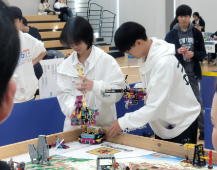
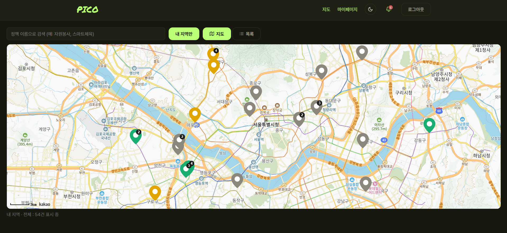
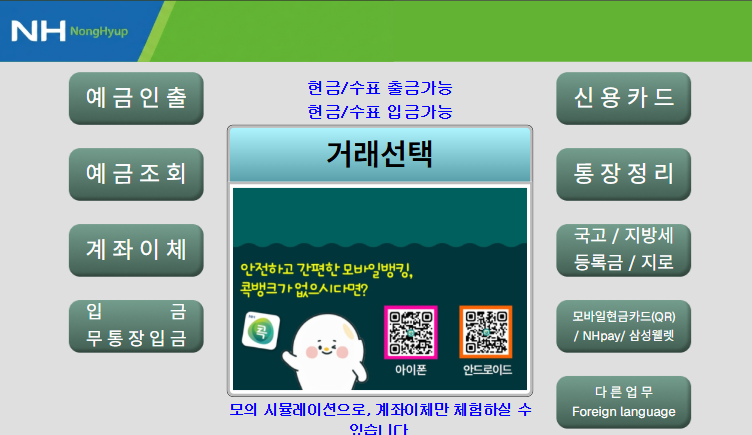

한번 궁금해진 건 끝까지 해봅니다. 낯선 도구와 문제를 만나도 직접 부딪히며 답을 찾습니다.
박지용
안녕하세요. 저는 Jiyong Park입니다.
궁금한 건 직접 만들어 보며 배우고, 제가 배운 것을 다른 사람과 나누는 걸 좋아합니다.
저를 움직이게 하는 것
익숙한 문제도 다른 방법으로 풀어보려 합니다. 작은 아이디어라도 직접 구현해보는 과정이 즐겁습니다.
안녕하세요. 저는 Jiyong Park입니다.
궁금한 건 직접 만들어 보며 배우고, 제가 배운 것을 다른 사람과 나누는 걸 좋아합니다.
한번 궁금해진 건 끝까지 해봅니다. 낯선 도구와 문제를 만나도 직접 부딪히며 답을 찾습니다.
익숙한 문제도 다른 방법으로 풀어보려 합니다. 작은 아이디어라도 직접 구현해보는 과정이 즐겁습니다.
제가 활동하는 개발 동아리입니다. 함께 배우고 만들며, 소나축(SSF)에서는 수업자로 참여했습니다.

FLL에서는 로봇을 만들며 역할을 나눴고, 해커톤에서는 짧은 시간에 의견을 맞추는 법을 배웠습니다.
지도에서 나에게 맞는 정책을 찾는 서비스입니다.

노인 사용자가 ATM을 편안하게 익히도록 만든 시뮬레이터입니다.

포트폴리오를 더 쉽게 둘러볼 수 있게 만든 서비스입니다.
개발을 막 시작하며 만든 영어 공부 사이트와 주기율표 프로그램입니다.
아직 공개하지 않은 작업입니다. 완성되면 이 기록에 추가합니다.